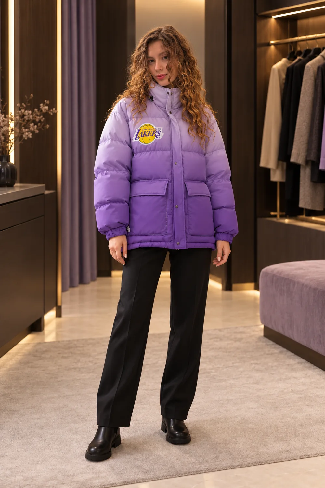

01 / ВЫБЕРИ ВЕЩЬ03 В ШКАФУ
Заглянем
в гардероб?
Выбирай с вешалки.
Примерим, рассмотрим, найдём твоё.
Наведи на вещь — она чуть повернётся.
Нажми — откроется карточка.
Вся подборка магазина ↗
ПОЛЯ / ПРИМЕРОЧНАЯ 
Секунду, переодеваюсь…
ОБРАЗ 01 / 03Лиловый пуховик